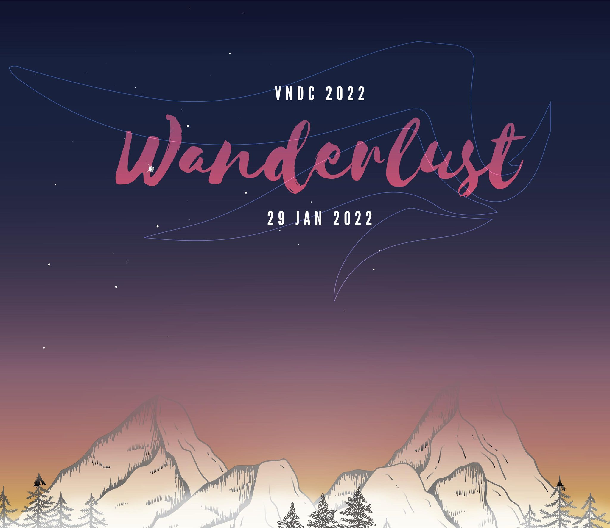

<link rel="stylesheet" href="../static/confirmation.css">
<figure class="movie">
    <div class="movie__hero">
        
    </div>
    <div class="movie__content">
        <div class="movie__title">
            <h1 class="heading__primary">VNDC - Wanderlust <i class="fas fa-fire"></i></h1>
            <div class="movie__tag movie__tag--1">#drama</div>
            <div class="movie__tag movie__tag--2">#fantasy</div>
        </div>
        <p class="movie__description">
            VNDC năm nay đã quay trở lại cùng với chủ đề Wanderlust, có nghĩa là “a strong desire to travel". Đến với
            hai vở kịch, các bạn sẽ được thấy rằng nó không đơn giản chỉ là đi chơi, đi du lịch, mà còn có các ý nghĩa
            sâu xa hơn thế. Hãy cầm tấm vé thông hành này để cùng đi xem các diễn viên tài năng và đáng yêu thể hiện toả
            sáng nhé!
        </p>
        <p class="info">
            <a href="/">Trở về trang đặt vé</a> <br>
        </p>

        <div class="movie__details">
            <p class="movie__detail"><span class="icons icons-red"><i class="fas fa-camera-retro"></i> </span>VNNTU</p>
            <p class="movie__detail"><span class="icons icons-grey"><i class="fas fa-clock"></i> </span>Giờ bắt đầu: 19:00</p>
            <p class="movie__detail"><span class="icons icons-yellow"><i class="fas fa-file-invoice-dollar"></i>
                </span>29/1/2022</p>
        </div>
    </div>
    <div class="movie__price">FREE</div>
</figure>